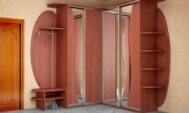

WA
WA MAX
MAX TG
TG VK
VK/ каталог
Мебель
на заказ
Изготовление мебели на заказ для квартир, домов, офисов и торговых помещений.


/ материалы
Материалы

Мебель на заказ для дома и офиса. Типовая и эксклюзивная, любые конфигурации и размеры. Современные материалы и комплектующие. Кухни, шкафы-купе , раздвижные перегородки , стенки и многое др
В этом разделе сайта представлены материалы, которые мы используем при изготовлении мебели . Здесь представлен не исчерпывающий каталог, а лишь образцы наиболее популярных, из применяемых на
В этом разделе сайта представлены материалы, которые мы используем при изготовлении мебели . Здесь представлен не исчерпывающий каталог, а лишь образцы наиболее популярных, из применяемых на
/ кухни
Кухни

Кухни из шпона – более экономичная альтернатива классическим кухонным гарнитурам из массива. Такая мебель выглядит не менее благородно и естественно, чем изделия из дерева. Цена мебели со шп
Изготавливаем качественные и практичные кухни по индивидуальному заказу . Используем все доступные на сегодняшний день материалы фасадов и столешниц, а также комплектующие заслуживших довери
Предлагаем изготовление на заказ изысканной кухонной мебели с фасадами из массива натурального дерева: дуб, бук, орех, береза, ясень. Работаем в любых стилистических направлениях.
Кухни из шпона – более экономичная альтернатива классическим кухонным гарнитурам из массива. Такая мебель выглядит не менее благородно и естественно, чем изделия из дерева. Цена мебели со шп
"Итальянские" кухни от «МАЛКОмебель» могут быть изготовлены в любом классическом стиле, от роскошного Барокко до по-домашнему уютного Прованса. Всё зависит только от ваших предпочтений. Маст
Предлагаем вашему вниманию кухонную мебель на заказ с наборными фасадами из МДФ «под дерево» . Белые классические кухни из МДФ с фрезеровками, сегодня на пике моды. Рамочные фасады из МДФ с
Кухня "под потолок" - отличный способ сделать кухонную мебель стильной, удобной и вместительной. Мы готовы изготовить для Вас кухонный гарнитур, который будет занимать всю высоту помещения.
Если вас интересуют яркие, нестандартные цветные кухни, обратите внимание на фасады из крашеного МДФ . Такого разнообразия оттенков не может предоставить больше ни одни другой материал. На ф
Изготавливаем на заказ по индивидуальным размерам кухонную мебель с фасадами из плёночного МДФ, отличающиеся высокими прочностными характеристиками, эстетичностью, демократичностью цен.
Дизайнеры и мастера МалкоМебель готовы разработать для заказчиков интересные и практичные кухни с фасадами из пластикового МДФ . Пластик обладает рядом качеств, не свойственных ЛДСП и деревя
Современный кухонный гарнитур с рамочными фасадами от компании «МАЛКОмебель» – это наиболее рациональный выбор для тех, кто отдаёт предпочтение практичности и долговечности при демократичной
Компания МалкоМебель изготовит на заказ кухонную мебель с радиусными (гнутыми) фасадами из крашенного, пластикового или пленочного МДФ, и с рамочными дверцами из массива.
Реализуйте свою мечту о красивой и удобной кухне. Заказывайте кухни с фотопечатью по индивидуальным проекту. Сочные натюрморты, яркие пейзажи, абстракция на кухонную тему – выбирайте то, что
Компания «МАЛКОмебель» предлагает изготовление кухонной мебели с фасадами на основе МДФ украшенных художественной росписью . Яркие и эффектные рисунки, нанесенные на дверцы шкафов, сделают о
Искусственный или акриловый камень позволяет создать эффектную столешницу любой формы без швов . Рабочая поверхность с фактурой мрамора или гранита придаст кухонному помещению яркий образ. М
/ шкафы и перегородки
Шкафы и перегородки

Изготавливаем качественные, практичные, надёжные шкафы-купе по индивидуальному заказу: встроенные и отдельностоящие. Мы используем все популярные на сегодняшний день материалы, а также компл
Предлагаем изготовление на заказ встроенных шкафов-купе , которые идеально впишутся в интерьер Вашей квартиры, дома или офиса.
Предлагаем изготовление распашных шкафов под заказ . Этот классический и нестареющий вид мебели является одним из наиболее гибких и практичных решений для освоения интерьера.
Изготавливаем на заказ межкомнантные раздвижные перегородки и двери купе по дизайн-проектам, созданным персонально под каждого клиента.
/ для дома
Для дома

Предлагаем изготовление красивой и удобной детской мебели на заказ. Выезд замерщика, доставку и установку осуществляем по Ростове-на-Дону и Ростовской области. Современные материалы, безопас

Проектирование, изготовление и монтаж гардеробных комнат любого размера по индивидуальному заказу. Организуем внутреннее пространство - полки, корзины, вешала и другие комплектующие, а также

Предлагаем изготовление стенок и горок на заказ - самых популярных видов мебели для обустройства зала и гостиной. Мы готовы спроектировать и изготовить для Вас по индивидуальному заказу как

Изготовливаем мебель для прихожих по индивидуальному заказу. Выбирайте любую конфигурацию, материалы, фурнитуру. В зависимости от размеров помещения и личных предпочтений мы поможем Вам ском
/ для бизнеса
Для бизнеса

Изготовление корпусной мебели для офисов на заказ: столы, шкафы, стойки, ресепшны, а также уникальные предметы интерьера по индивидуальному проекту.
Изготовим по индивидуальным размерам торговую мебель для магазинов, аптек, кафе и других учреждений торговли и общественного питания . Гарантируем соблюдение всех нормативов, предъявляемых к